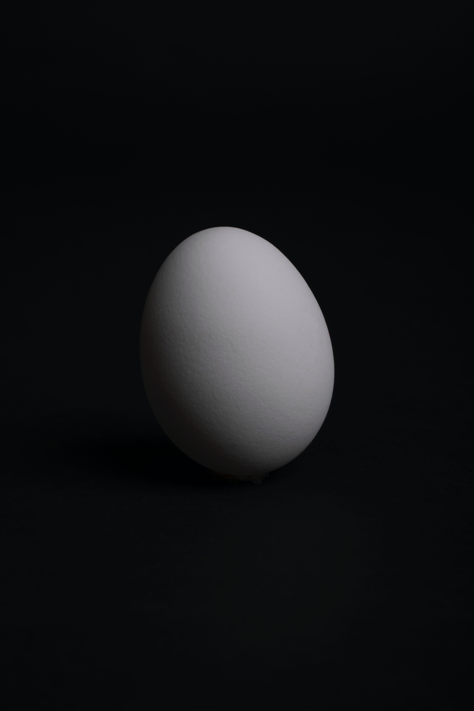

- Mayfly
- From Demian
- ???
Demian
The bird fights its way out of the egg. The egg is the world. Who would be
born must first destroy a world.
Thd bird flies to God. The God's name is
Abraxas.

Every people has his(her) own boundary, which is pretty necessary.
Becasue without any frame, we cannot interpret our surrounding world properly.
otherwise we probably will be overwhelmed by uncertainty.
My happiness
- Coffee
- Piano
- Shrimp
- Coding